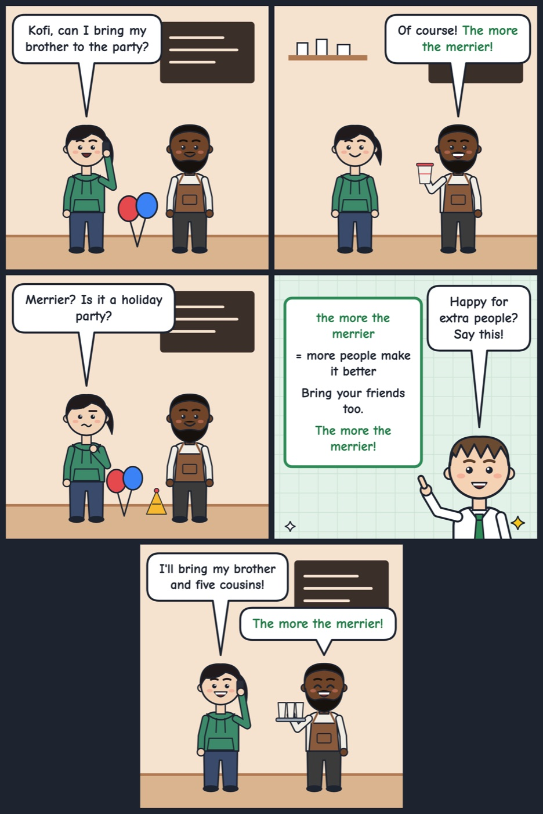

the more the merrier
It's good to have more people join us.
Bring your friends too. The more the merrier!
Tip: Say it as a short comment when you welcome extra people to an event or plan; it is friendly and informal, so it suits invitations among friends more than formal emails.
Hear it in conversation
Workbook
1. What does it mean?
In this conversation, what does 'the more the merrier' mean?
2. Fill the gap
We're planning a hike this weekend, so feel free to invite your classmates. !
3. Choose the best reply
Amira: Do you mind if my two brothers come along to the cinema with us tonight?
4. Your turn: speak
Do you prefer small gatherings or big parties? Tell me about a time you enjoyed one.
Show an example answer
I usually like small gatherings, but last summer my friend organised a picnic in the park and the group kept growing. People kept bringing along their friends, and she just laughed and said, "The more the merrier!" It turned into one of the best days I've had all year.
Answer key: the more the merrier
- 1. B. It's good to have more people join us.
- 2. The more the merrier
- 3. A. Not at all, the more the merrier!
- 4. Example: I usually like small gatherings, but last summer my friend organised a picnic in the park and the group kept growing. People kept bringing along their friends, and she just laughed and said, "The more the merrier!" It turned into one of the best days I've had all year.
See it in a comic
